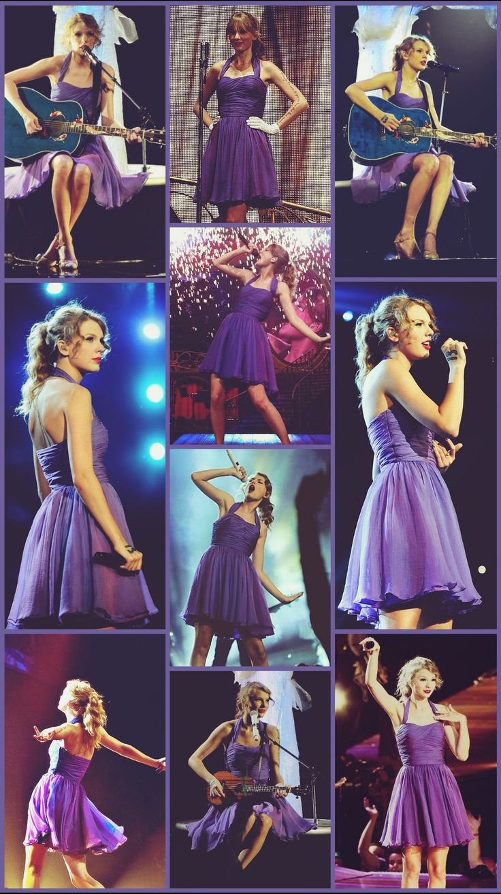

Speak Now —en español: «Habla Ahora»— es el tercer álbum de estudio de la cantante estadounidense Taylor Swift, fue publicado el 25 de octubre de 2010 por el sello discográfico Big Machine Records. La producción del álbum se llevó a cabo entre 2009 y 2010 en varios estudios de grabación y estuvo a cargo de Swift y Nathan Chapman. Escrito íntegramente por Swift como continuación de Fearless y descrito como un álbum conceptual suelto sobre confesiones, Speak Now amplía el estilo country pop de su trabajo anterior, pero con más sensibilidad rock, con influencias de bluegrass, pop punk, pop rock y soft rock. Líricamente, trata temas como el amor, el romance, el desamor y el perdón.
